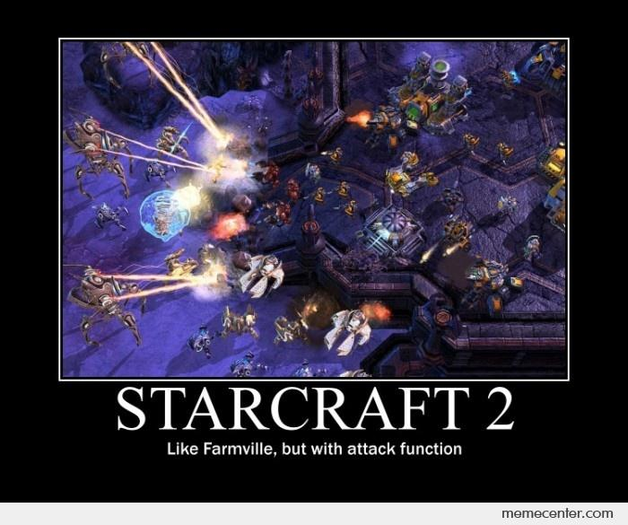
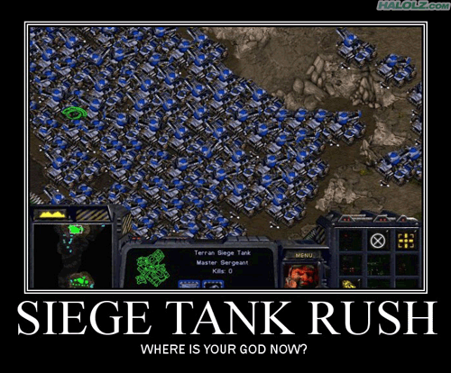
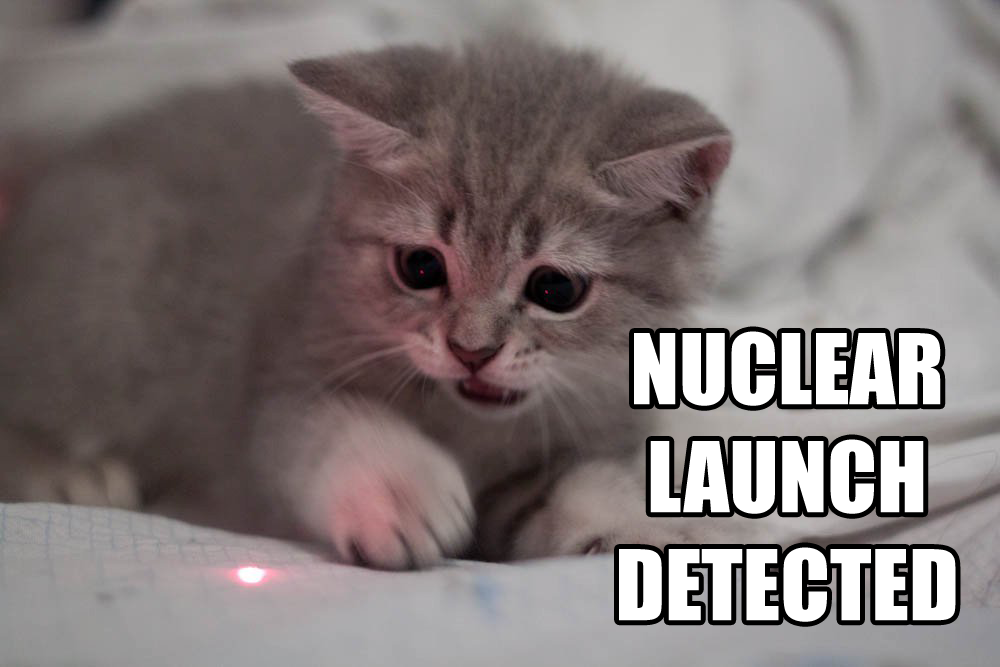
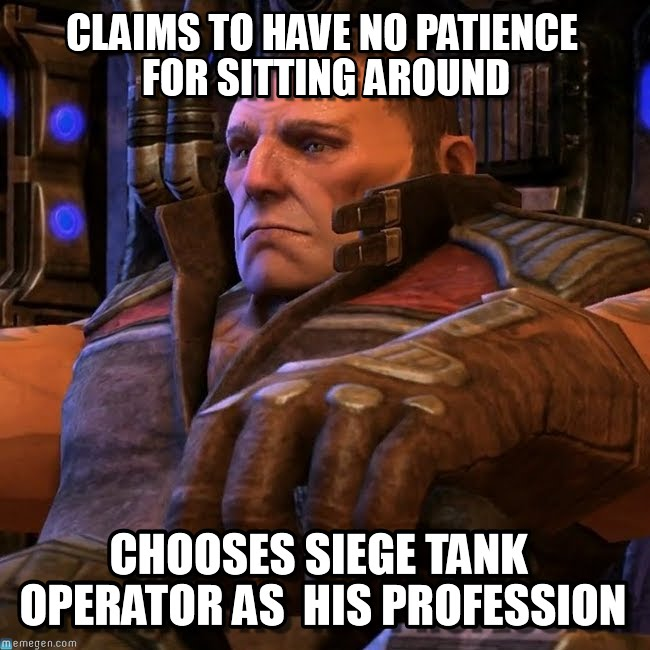
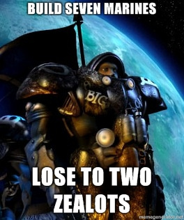
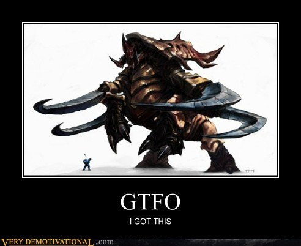

I’ve been sick the past couple of days. In between drinking way too much tea, passing out cold, and actually getting the occasional bit of work done, I’ve been (re-)playing a decent amount of StarCraft II, specifically the Legacy of the Void (LotV) campaign. It’s the final installment of SC2, and honestly it’s the one I find most frustrating.
No, it’s not the dialogue, which is super cliche and overwrought, but it’s endemic across the entire SC2 series. Also, the LotV gameplay honestly makes up for it (as is true for most of the SC2 series).
Rather, my problem is with the actual storytelling. There are lots of sprawling story elements but a lot of them just don’t make any sense. Heart of the Swarm (HotS) had a few chin-scratching moments, but overall the storyline was a pretty clear and well-motivated revenge tale. Even before that, Wings of Liberty (WoL) was a clear and compact story of regret and redemption. So while the LotV gameplay was outstanding, it was extremely jarring for the story to be so jumbled and reliant on retconning a large amount of StarCraft lore.
So may I present, inspired by RedLetterMedia’s treatment of Prometheus several years back, a list of questions that came to mind. Presented in no particular order:

- So apparently Emil Narud / Samir Duran was also a fallen Xel’Naga, as he said as much in the LotV epilogue missions. Why was he alive all this time, but not Amon? How did he escape Amon’s fate?
- Why did he take the form of a human instead of some all-powerful hybrid like the ones he was cultivating in those years? What was stopping Amon from taking the form of a human as well?
- What were the purposes of Duran’s machinations in Brood War? As stated at the time, it was in the service of returning Amon and breeding the hybrid, but if he was a full Xel’Naga, why would Amon’s resurrection even be necessary? Couldn’t Narud just remake all life in the universe, then resurrect Amon at his leisure for their post-universe-destruction celebration party?

- Oh man, the Khala. Supposedly the thing that both saved the Protoss race back in the day, but also nearly led to their destruction when Amon infiltrated it in LotV. A nice symmetry, sure, but… ok. So. The Khala was linked through khaydarin crystals, which are rife throughout Protoss technology. The Protoss themselves interface with it through their nerve cords, which [SPOILER ALERT] they all sever at the end of LotV to drive Amon back into the Void. But couldn’t he just live on in their technology?
- Would the Protoss have to derive entirely new, non-khaydarin crystal technology to completely drive out Amon?
- How on Kerrigan’s red Char did they manage to sever the nerve cords of literally all the Protoss of the Golden Armada–including those who had not yet arrived at Aiur–in the two minutes that the keystone was able to contain Amon?! Rohana proved that physical distance was not an issue for Amon, only connection to the Khala via nerve cords did. How could they have possibly gotten the order out to all those Protoss in such a short period?
- Amon is shown leaving Artanis’ body when Zeratul severs his nerve cords. But couldn’t Amon just possess Artanis? Why was Amon able to inhabit the Khala, but not individuals?
- I mean, where is the Khala even centralized? If it’s just the psychic connection between Protoss–and therefore completely decentralized–wouldn’t Amon act more like a virus? Why would severing everyone’s nerve cords suddenly leave Amon homeless? Is severing your nerve cords like a vaccination?
- Why would Amon even need a “host body” if he’s able to take over literally all the Khalai Protoss?

- How did Amon control the Zerg? Through an Overmind? Where was it located? If not, did he exert control over every individual Zerg? How? Why couldn’t he do the same thing through the Protoss? Or hell, even the Terrans?
- Did he possess the Zerg? Why couldn’t he control Kerrigan’s Zerg? Or again, the Protoss?
- Where was Amon in the intervening period of Heart of the Swarm when he was (presumably) already revived following the conclusion of Wings of Liberty, but not yet the main villain at beginning of LotV? Drinking at a bar somewhere?
- The original StarCraft lore seems to be retconned to suggest (in no uncertain terms) that any and all tampering in the development of the Zerg and Protoss was the fault of Amon and his followers and not part of the original plan put in motion by the Xel’Naga. Does that mean the Khala was Amon’s creation, as well as the Overmind? What was even supposed to happen absent the Khala or the Overmind?
- Why was Amon so much more powerful than Ouros? They’re both Xel’Naga; wouldn’t they be evenly matched?
- Kerrigan was Xel’Naga for all of an hour before she flat-out blasted Amon out of existence. How? Why was she better equipped to deal with Amon in such short order, compared to a friendly Xel’Naga trapped in the Void for eons?
- Sure, maybe the combined might of both Narud and Amon kept Ouros trapped in the Void, but Narud was only with his master for all of a campaign and a half; plus, it was only after Stukov dealt Narud the killing blow in the epilogue that Ouros began the process of giving Kerrigan his essence. Wouldn’t the combined might of Kerrigan and Ouros be infinitely more powerful than just Amon?
- If Amon killed all those slumbering Xel’Naga in Ulnar, why wouldn’t they also just return to the Void, as Amon did at the end of LotV?

- The Tal’darim are introduced in WoL as a “fanatical” group of Protoss who generally do their own thing. In LotV, it’s revealed that they’re actually in league with Amon. But in WoL, they are actively fighting against the retrieval of the artifact pieces–an essential step to assembling the artifact, using it to de-infest Kerrigan, and capturing all that power to resurrect Amon. This connection becomes even more confusing when considering that it was Moebius Corps who literally hired Jim Raynor and his Raiders to assemble the artifact pieces.
- i.e., Moebius Corps was led by Emil Narud, aka Samir Duran, aka the one dude who’s been trying for millennia to resurrect Amon. Why would the Tal’darim fight directly against him? Did it take them the countless ages between the Aeon of Strife and HotS to realize they were working for the same guy?
- Do the Tal’darim still have their nerve cords? Are they connected to the Khala?
- It would seem not, since after Alarak becomes their highlord and turns them against Amon, I would think Amon’s first course of action would be to take control of them, but he doesn’t, or can’t. But it seems like they do have nerve cords, given Alarak’s huge jagged ponytail thing. So are they somehow not connected to the Khala, despite having nerve cords? If that’s the case, why can’t the Daelaam do the same? Is it a choice to connect to the Khala? Is it like the Force–something you can train yourself to use, but which you can also consciously separate yourself from?
- Alarak is, like, wicked powerful. Crazy powerful. He breaks through a stasis field on the Spear of Adun like it was tissue paper, and blasts open an armored door and destroys a warp crystal on Aiur with a single shot. Where was that ability when he was fighting Malash for highlord?

- The Nerazim are said to draw their power “from the Void”. What even is the Void? Some kind of parallel evil dimension?
- But the Void clearly has toxic and destabilizing effects on the “current” dimension, since anytime a rift opens it pretty much wipes everything it touches apart. But then, in the epilogue, everyone gears up and heads into the Void! How?!
- So, the Dark Templar get their power from the same place as the Xel’Naga? And Amon? Wouldn’t that mean only a Dark Templar can defeat Amon? Or that Amon could pierce Nerazim cloaks?
- Or, wouldn’t that mean Amon would have total control over their abilities, making them just as vulnerable to his influence as the Khalai Protoss?
- Seriously, how are missiles going to be an effective weapon in the Void?
- Against Narud and Amon?
- AMON.

- Let’s talk a bit about Amon’s “plan”. He wanted to break the Infinite Cycle and remake all life in his image. But the end credits of LotV literally said, that with Kerrigan’s ascension and the alliance’s victory over Amon, the Infinite Cycles came to an end. So… mission accomplished?
- So, from the Void, he uses his pawn / follower / fellow Xel’Naga (???) Narud to work on a way to resurrect him, creating “false” hybrid armies in the meantime. Were these hybrid basically accelerated versions of what the Infinite Cycles were supposed to “naturally” result in? I mean, weren’t the Zerg and Protoss ultimately meant to merge?
- Amon corrupted the Zerg, creating an overriding imperative to destroy or assimilate the Protoss. Since the Protoss can’t be infested, I would assume that basically amounts to a “kill” order?
- Anyway, the Overmind cleverly tries to circumvent that order by creating the Queen of Blades, with supposedly only slightly more free will than it. Why? Where does that slightly-more-free-will come from? Just because she’s Terran, and therefore not a Xel’Naga creation? Or was it something unique to Kerrigan?
- Of course, she was only infested after Amon’s death. How was Narud/Duran planning to resurrect his master, then? It was only the de-infestation of Kerrigan that gave him enough power to resurrect Amon. So until that unlikely sequence of infestation-deinfestation events happened, had he just been spending a lot of time on his Pelaton and researching cutting-edge battery technology?
Really, I just think this game sucks.
(not really tho)
Citation
@online{quinn2019,
author = {Shannon Quinn},
title = {StarCraft {II} {Questions}},
date = {2019-01-31},
url = {https://magsol.github.io/2019-01-31-starcraft-ii-questions},
langid = {en}
}